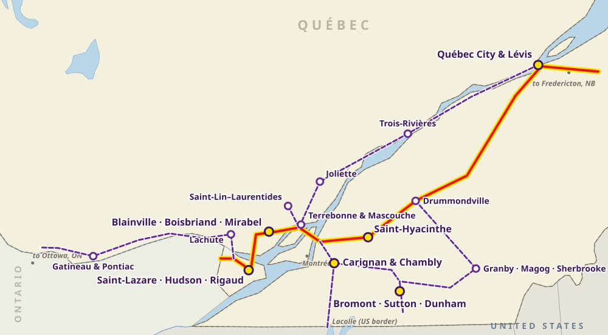

Québec
Horse transport in Québec
From Saint-Lazare and the Laurentians to Bromont, the Eastern Townships and Québec City, Nexa Horse Transport links Québec’s horse communities along Autoroutes 40 and 20.
Our routes in Québec

- Main horse communities
- Regional communities
- Main route
- Branch route
Western corridor and Outaouais
- Saint-Lazare, Hudson and Rigaud: boarding stables, private estates and over 200 km of trails
- Gatineau and Pontiac: Luskville, Quyon, along the Ottawa River
Laurentians and Lanaudière
- Blainville, Boisbriand and Mirabel: show jumping facilities and training centres
- Lachute and Saint-Lin–Laurentides: breeding farms, western and standardbred training
- Terrebonne, Mascouche and Joliette: stables north of Montréal
Montérégie and Eastern Townships
- Bromont, Sutton and Dunham: international competition hub
- Saint-Hyacinthe and the Richelieu Valley: Carignan, Chambly, equine veterinary hospital
- Granby, Magog and Sherbrooke: eventing and multi-discipline barns
Central Québec and Capitale-Nationale
- Drummondville and Trois-Rivières
- Québec City and Lévis: Saint-Augustin-de-Desmaures, Saint-Apollinaire
Transport routes
Main route, west to east
Saint-Lazare → Blainville / Mirabel → Saint-Hyacinthe → Drummondville → Québec City / Lévis
Autoroute 40 east, then Autoroute 20 east · about 310–340 km
Eastern Townships loop
Carignan → Bromont → Sutton / Sherbrooke → Drummondville
Autoroute 10 east, then Autoroute 55 north · about 220–260 km
Outaouais spur
Rigaud → Lachute → Gatineau
Autoroute 50 west · about 150–170 km from Rigaud
Good to know
Barn to barn
Stables, show parks and training centres across southern Québec. Send us the exact addresses.
Through Montréal
We time trips around Montréal traffic so horses spend less time standing.
To and from the USA
Cross-border trips through Lacolle, always starting or ending in Canada.
Preparing for transport
Tell us the number of horses, their size, loading experience and any vet or handling needs.
The booking form is a request for an estimate. Nothing is confirmed until we call or email you.
Explore our other transport services
Alberta · British Columbia · Saskatchewan · Manitoba · Ontario · New Brunswick · Nova Scotia · Prince Edward Island · Coast to coast · Long-distance across Canada
For a specific journey, request an estimate or call 1-844-491-NEXA.